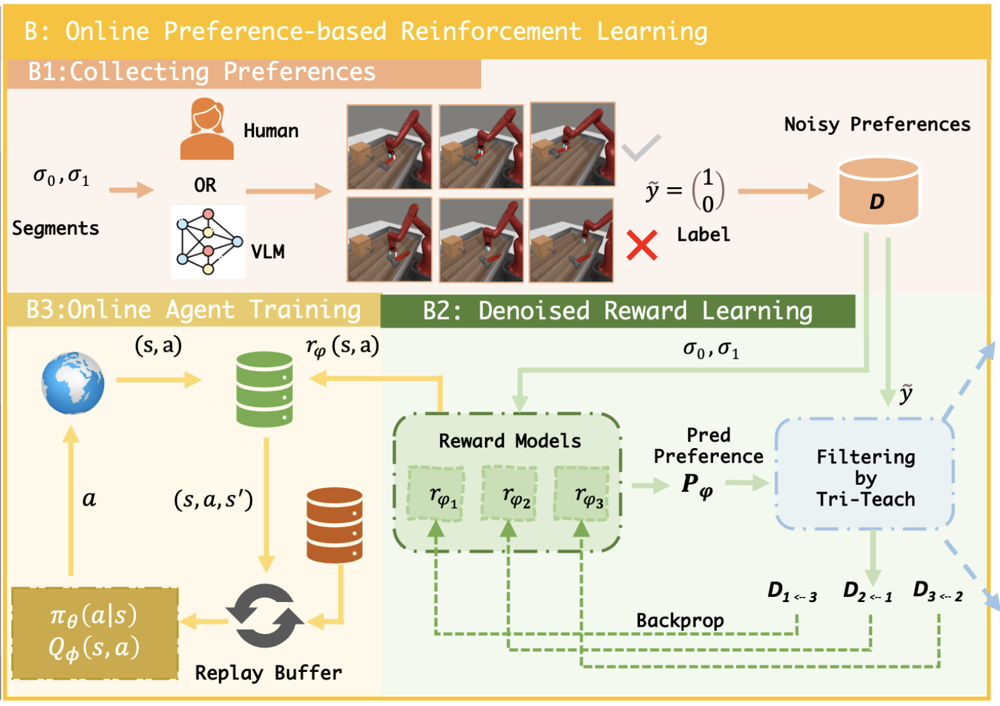
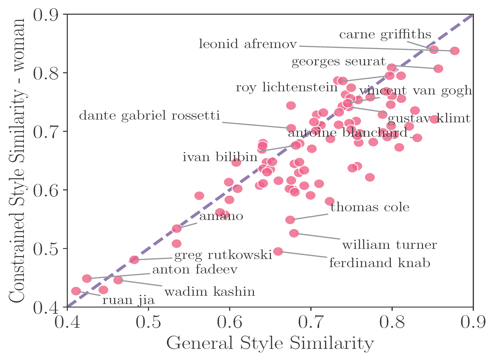
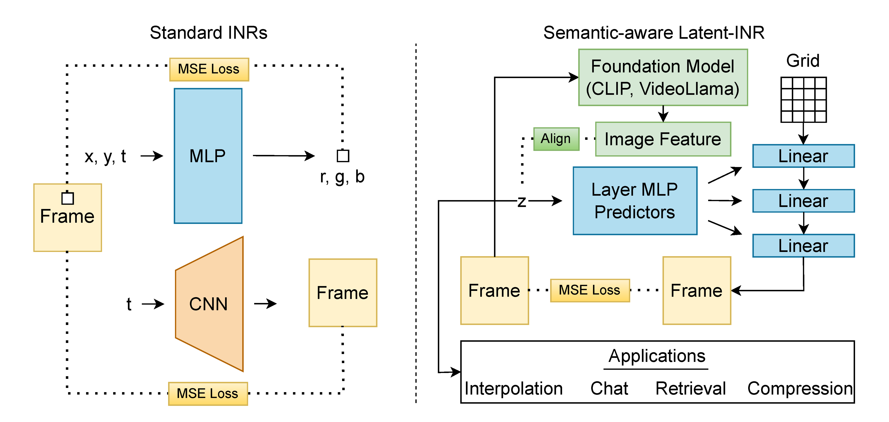
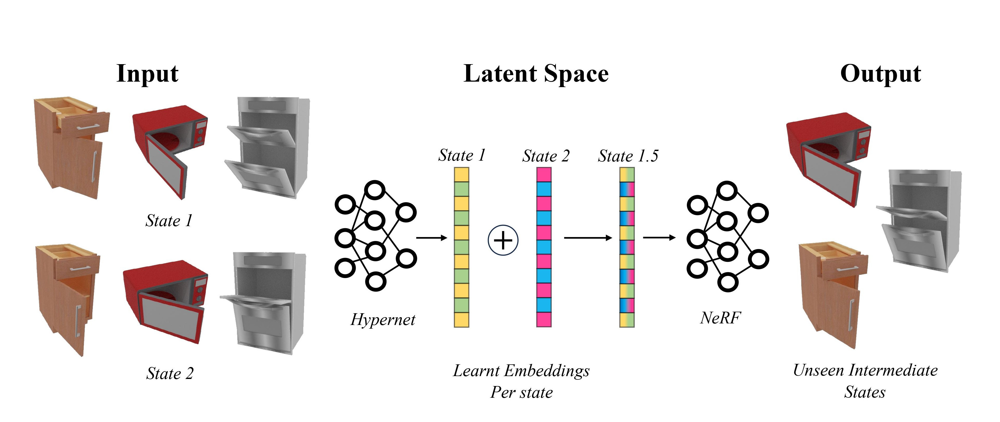
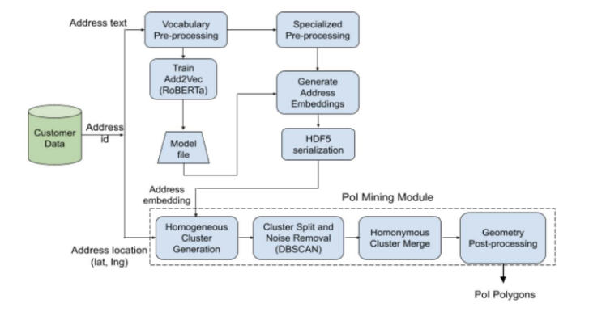

Anubhav Gupta
Hi!
I am a Ph.D. student in Computer Science at the University of Maryland, College Park advised by Prof. Abhinav Shrivastava. I am currently working on understanding videos through graphs and my plan is to apply these techniques to understand long videos. I have published works on understanding style copying in diffusion models; showing semantic capabilities with implicit neural represenataions (details below).
Before starting my graduate studies, I worked in industry for 8 years in various research and engineering roles. I have primarily focused on perception and my most relevant experience in this domain has been in autonomous vehicles space. In my previous life, I worked as an Analyst with multiple banks. I received my bachelors from IIT Delhi.
News
- May-Aug 2024: Applied Scientist Intern@Amazon Fashion: Worked on diffuson-based controllable indoor novel scene creation. Work is still under progress
- July 2024: 3 papers got accepted to ECCV 2024. Two of these works were as shared first-author
- May-Aug 2023: Applied Scientist Intern@Amazon Fashion
- Jan 2023: Organized the workshop Dealing with novelty in the Open Worlds (DNOW) @WACV 2023
- Oct-Dec 2022: Applied Scientist Intern(Co-op)@Amazon: Worked on Visual Geolocalization
- June 2022: Organized ObjClsDisc: In-the-Wild Object Discovery Challenge as part of the workshop Visual Perception and Learning in an Open World @CVPR 2022
- May-Aug 2022: Applied Scientist Intern@Amazon: Researched on edge-based object detection models and successfully deployed models for field trials
- Jan 2022: Organized the workshop Dealing with novelty in the Open Worlds (DNOW) @WACV 2022
- Sep 2021: PatchGame is accepted to NeurIPS'21!
- Jan 2021: I began my masters in CS@UMD!
- Sep 2020 - Jan 2021: Worked as a Research Intern @Swiggy
- Jun 2017 - Sep 2020: Built computer vision models and other cool stuff @Netradyne
Research Highlights
|  |
TREND: Tri-teaching for Robust Preference-based Reinforcement Learning with Demonstrations
ICRA 2025
Preference feedback collected by human or VLM annotators is often noisy, presenting a significant challenge for preference-based reinforcement learning. To address this challenge, we propose TREND, a novel framework that integrates few-shot expert demonstrations with a tri-teaching strategy for effective noise mitigation.
|
|  |
Can we measure the style similarity between images? We propose a way to extract style from images. We call this Contrastive Style Descriptors (CSD). Using this model, we study the style replication in image generation models.
Gowthami Somepalli*, Anubhav Gupta*, Kamal Gupta, Shramay Palta, Micah Goldblum, Jonas Geiping, Abhinav Shrivastava , Tom Goldstein.
|
|  |
We show semantic capabilities in Implicit Neural Representations (INR) by proposing a novel framework that learns discriminative semantics in videos.
|
|  |
Modeling unseen 3D articulation states by interpolating across a learnable, view-invariant latent embedding space.
Archana Swaminathan,
Anubhav Gupta ,
Kamal Gupta,
Shishira R Maiya,
Vatsal Agarwal,
Abhinav Shrivastava
|

|
Emergent communication via mid-level patches in a referential game played on a large-scale image dataset.
Kamal Gupta, Gowthami Somepalli, Anubhav Gupta , Vinoj Jayasundara, Matthias Zwicker, Abhinav Shrivastava
|
|  |
Mining points of interest via address embeddings: an unsupervised approach
LocalRec '21: Proceedings of the 5th ACM SIGSPATIAL
Unsupervised PoI mapping (polygon boundaries) using GPS, OpenStreetMaps and Address Information in highly dense environments
Abhinav Ganesan, Anubhav Gupta, Jose Mathew
|

|
Two Party Evaluation of the Open Visual World
Under Review
Defining a paradigm for unbiased evaluation in open worlds.
|